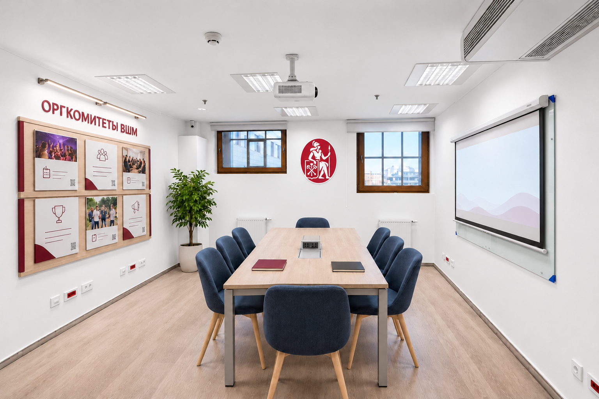
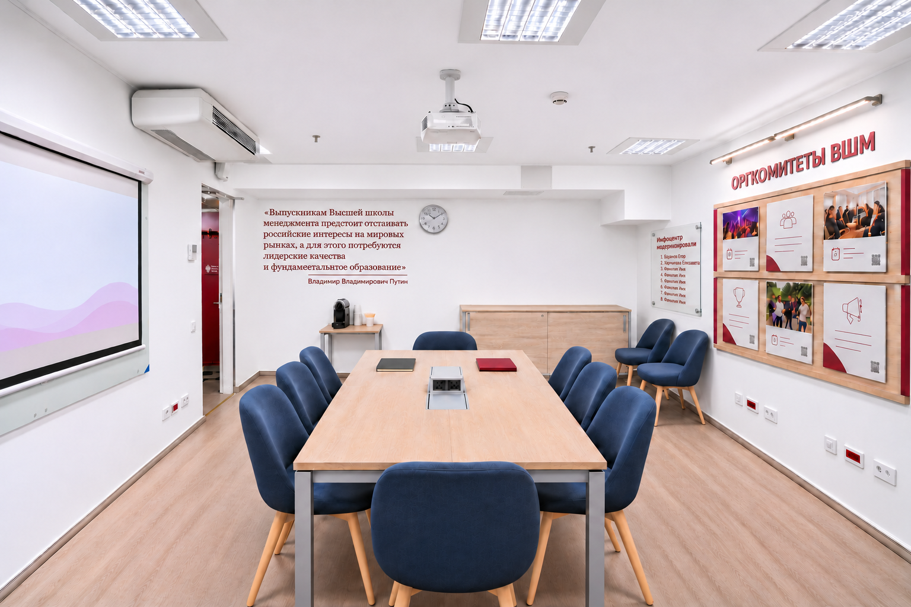
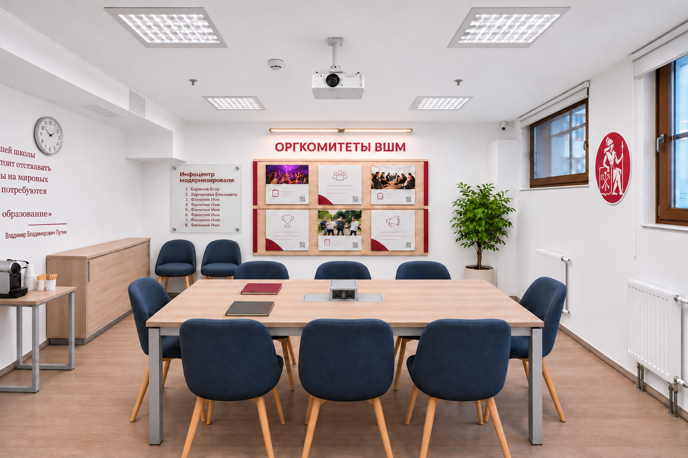
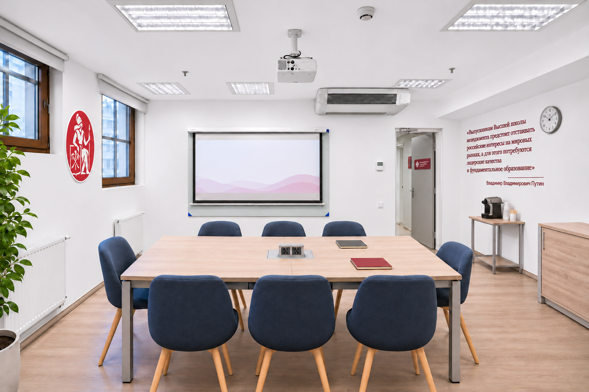

3D-просмотр
Поворачивайте мышью. Приближайте колёсиком.
Загрузка комнаты…
Загрузка 3D-модели…
Визуализации
Пять ракурсов одной комнаты. Нажмите на изображение, чтобы открыть полностью.





Идея оформления переговорной в инфоцентре
Студенческим оргкомитетам ВШМ нужна комната, где можно собраться всей командой, обсудить подготовку мероприятия, распределить задачи и показать презентацию. Здесь же можно проводить встречи с партнёрами, спикерами и представителями университета.
В комнате №1 уже есть основная мебель и маркерная доска. Предлагаем дополнить её оборудованием для презентаций, освободить проходы и сделать помещение светлее и удобнее для длительной работы.
Предлагаемые изменения
- Перекрасить бежевые стены в матовый белый цвет. Белые поверхности лучше отражают свет и помогут убрать ощущение тусклого, желтоватого помещения.
- Проверить существующие потолочные светильники и равномерность освещения. Для вечерней работы подобрать нейтральный оттенок света. Над стендом оргкомитетов добавить отдельную линейную подсветку.
- Переставить два имеющихся стола в центр и объединить в общую переговорную поверхность на восемь человек. При необходимости столы можно разделить для работы небольшими группами. Существующие синие кресла используем дальше.
- Два запасных кресла разместить вдоль стены со стендом, а небольшой боковой стол придвинуть к противоположной окнам стене. Освободить вход и пространство для открывания двери.
- Установить потолочный проектор и выдвижной экран перед существующей стеклянной доской. Поднятый экран позволит пользоваться доской для записей и обсуждений. Предусмотреть подключение ноутбуков и аккуратную прокладку проводов.
- Разместить стенд «Оргкомитеты ВШМ», представляющий все оргкомитеты. Для каждого предусмотреть сменную карточку с названием, фотографией, описанием деятельности, основными мероприятиями и QR-ссылкой на контакты. Шесть карточек на визуализациях показывают композицию; окончательное количество определим по полному списку.
- Организовать компактную кофе-зону на имеющемся небольшом столе: кофемашина, вода, чашки и расходные материалы. Существующую тумбу использовать для хранения.
- Между окнами закрепить официальный знак ВШМ СПбГУ с Минервой, сохранив его исходные цвет и пропорции.
- На двери разместить бордовую табличку с белым гербом слева и полным названием «Санкт-Петербургский государственный университет» справа. Использовать официальный логотип с оригинальным начертанием букв.
- Слева от часов разместить выбранную цитату Владимира Путина бордовым цветом в тон стенду оргкомитетов. После текста провести тонкую бордовую линию, под ней разместить подпись «Владимир Владимирович Путин».
- Рядом со стендом установить табличку на дистанционных креплениях с заголовком «Инфоцентр модернизировали».
- Добавить одно напольное растение у окон. Подсветку стенда и озеленение включить в обсуждение бюджета.